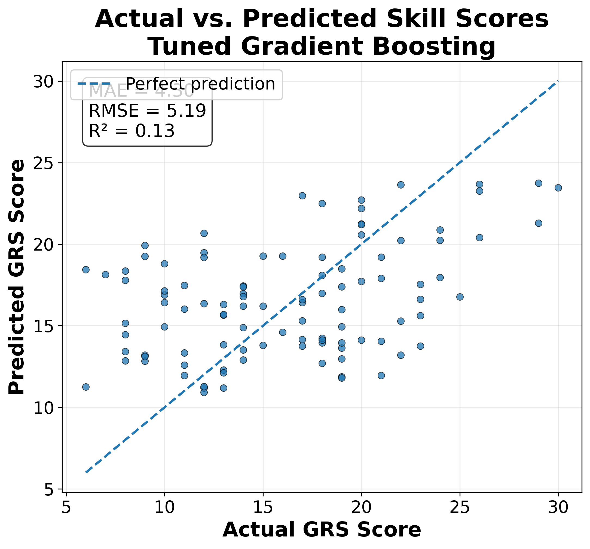
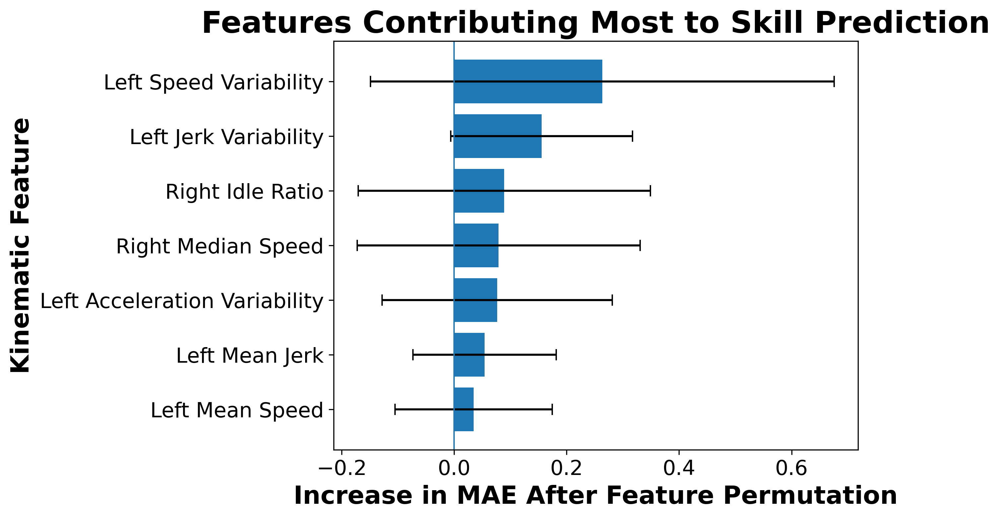

Motion contains information about skill.
The best subject-independent model achieved a positive R², indicating that movement characteristics contain measurable predictive information.
NSF REU SITE: HUMANS MOVE · University of Wyoming · Summer 2026
Exploring whether machine learning can estimate human skill from general movement characteristics, with the long-term goal of enabling adaptive shared-autonomy systems in assistive robotics.
Research Question
Assistive robots may eventually need to understand how capable a user is before deciding how much assistance to provide.
This project investigates the skill-estimation component of that problem. Using kinematic data from the JIGSAWS dataset, movement characteristics were extracted and used to train machine learning models to estimate Global Rating Scale skill scores.
Methodology
Robotic movement trajectories from the JIGSAWS dataset.
Speed, acceleration, jerk, idle behavior, variability, and duration.
Regression models trained to estimate continuous GRS skill scores.
Subject-independent validation on people not observed during training.
Dataset
The JHU-ISI Gesture and Skill Assessment Working Set (JIGSAWS) contains robotic surgical kinematic data recorded using the da Vinci Surgical System.
Although the dataset originates in surgery, this project focuses on general characteristics of human motion rather than task-specific trajectory geometry.
Results
After evaluating several regression models and tuning the strongest nonlinear candidates, Gradient Boosting achieved the best overall subject-independent performance.

Actual versus predicted GRS skill scores under subject-independent evaluation.
Model Interpretation
Permutation importance suggests that movement variability, smoothness, and idle behavior contain useful information for estimating skill.

Key Findings
The best subject-independent model achieved a positive R², indicating that movement characteristics contain measurable predictive information.
Performance on unseen individuals remains challenging, highlighting the importance of subject-independent evaluation.
Speed and jerk variability were among the strongest individual predictors identified by the final model.
An R² of 0.132 shows that handcrafted summary features capture only part of the structure associated with human skill.
Future Work
The next step is not simply to improve the regression score.
Future research can preserve the temporal structure of movement, evaluate skill across broader manipulation tasks, and ultimately investigate whether real-time skill estimates can improve adaptive shared-control systems.
About the Research
This project was completed during the Summer 2026 HUMANS MOVE Research Experiences for Undergraduates program at the University of Wyoming in the Robotics & Intelligent Systems Lab.
Researcher: Abdurrahman Oyediran
Computer Science · University of Southern Mississippi
Mentorship:
Dr. Chao Jiang
Umur Atan
Varun Bharadwaj